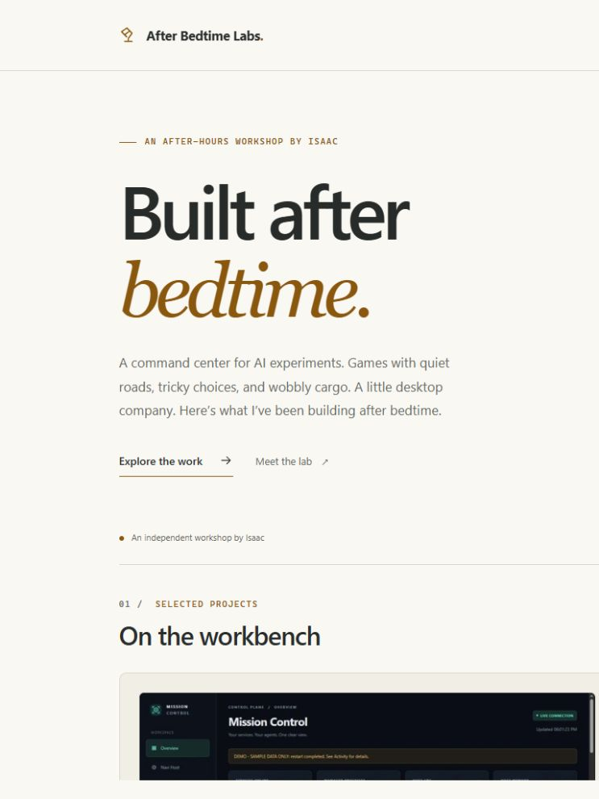
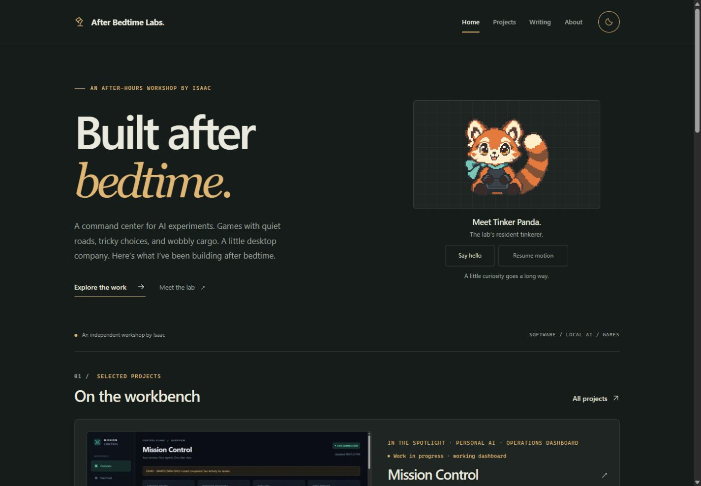
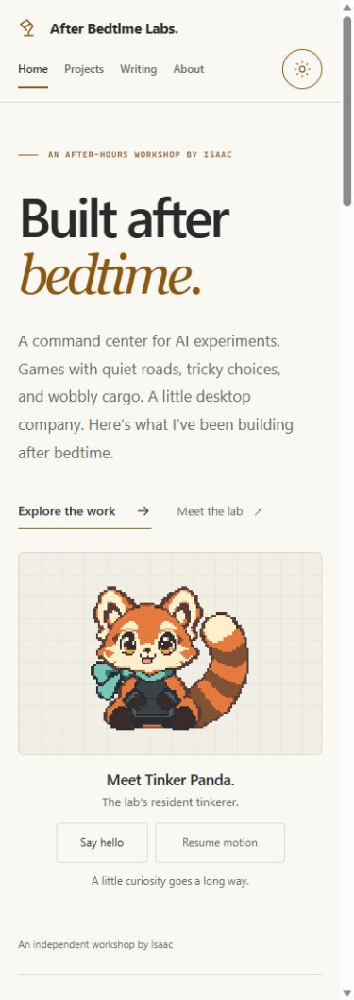
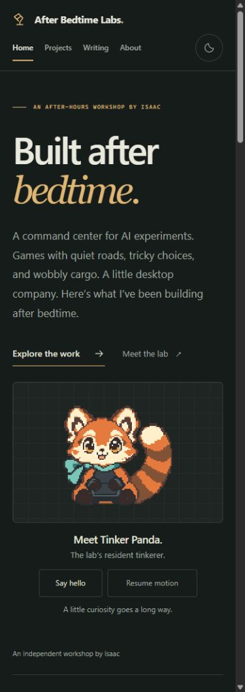
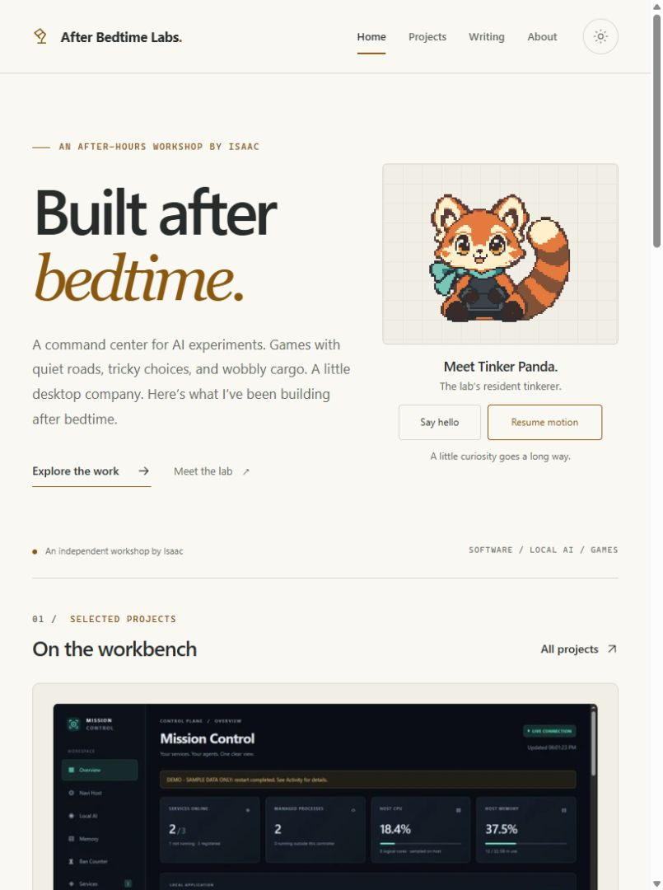

V2.1 Candidate B / prior canonical
64 × 64 · historical reference
The owner-selected V3.3 face, on the preserved V3.2 Hybrid 96 structure. These review panels use the actual implementation assets. Native panels are exactly 96 CSS pixels; enlarged panels use integer scaling without interpolation.
The PNG is byte-identical to the selected Expressive Markings source. The body, silhouette, ears, scarf, tail, proportions, palette, and transparency remain intact.

Original native canvas sizes are shown without normalization: V2.1 is 64 × 64; V3.2 and V3.4 are 96 × 96.
64 × 64 · historical reference
96 × 96 · preserved structure
96 × 96 · selected canonical face
Actual browser screenshots of the production build served locally at http://127.0.0.1:4323. These captures show the integrated website, including desktop and mobile light/dark themes and a tablet check. Select a thumbnail to inspect the original capture.





Finite playback uses the production atlases and their exact frame durations. It returns to the approved front after completion. Nothing animates until Play is selected.
Every frame is shown at native 96 × 96 on both backgrounds. First and last frames return to the exact approved front. On narrow screens, scroll each strip horizontally; the sprites never shrink.
Hoodie interior x30..46, y78..85 only; face and silhouette exact.


Eye apertures only; approved eyebrow/cheek/muzzle markings and alpha unchanged.


Exact whole-character translation by 0,-1,-2,-1,0 pixels; no expression substitution.


Explicit free upper tail row mask only, shifts +1 then -1; base anchored; ear/body exact.


Canonical file: public/mascot/tinker-panda-v3.4/front.png
SHA-256 b7a25d71ae8b74a0f692462090809843fab594eb58ef38f8c4e6d3bc68f3963e
Native frame PNGs: art/tinker-panda-v3.4/frames/. Durations and constrained edit regions: production manifest. The existing V2.1 / V3.2 / V3.3 art remains historical reference.
This is a local review artifact, not a deployed website page. PNG boards are artwork comparisons; genuine website screenshots are captured separately from the running website. Design selection is locked; subjective placement feedback can be recorded without generating another face concept.
Review documentation: README.md · browser-validation.json · asset-validation.json · independent-review.json